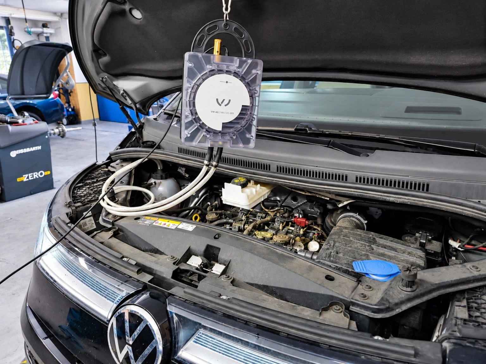

J&S SERVIS · SEIT 1994
Freie Fachwerkstatt für
VW Group
in Statenice bei Prag
ODIS-Diagnose, Spezialdiagnostik, fachgerechte Messungen, Herstellervorgaben und Kundenberatung.
Terminvereinbarung+420 605 399 448
AUS UNSERER WERKSTATTMessen statt vermuten.
Kühlsystemprüfung · VAS 531 009
UNABHÄNGIGER SERVICE FÜR
FACHWISSEN FÜR IHR FAHRZEUG
Von der Diagnose zur Lösung


J&S SERVIS · STATENICE BEI PRAG
Mehr Aufmerksamkeit für Ihr Fahrzeug
Weniger Sorgen für Sie
Professioneller Service von Volkswagen-, Audi-, Škoda-, SEAT- und CUPRA-Fahrzeugen seit 1994.
HerstellervorgabenFachgerechte MessungenPersönliche Beratung
Mehr über unsere Werkstatt Verstehen Sie Ihr Fahrzeug
Serviceintervalle, Warnleuchten und Fehlercodes. Fachartikel nach Fahrzeugmarke.
Fahrertipps öffnenKUNDENERFAHRUNGEN
Kundenbewertungen
Bewertungen auf Google und Firmy.cz. Beide Quellen werden getrennt angezeigt.
VEREINBAREN WIR EINEN TERMIN
Was braucht Ihr Fahrzeug?
Halten Sie die FIN, den aktuellen Kilometerstand und eine kurze Beschreibung der gewünschten Arbeiten oder Störung bereit. Termin und Arbeitsumfang bestätigen wir nach Absprache.
E-Mail an die WerkstattKralupská 90
Anfahrt Statenice – Černý Vůl, 252 62
Mo–Fr · 9:00–18:00